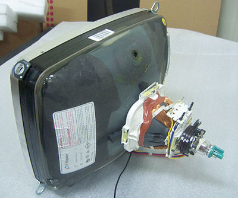
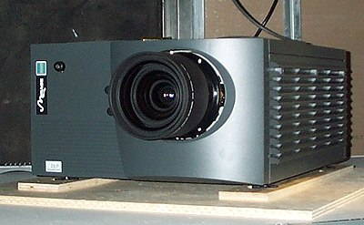
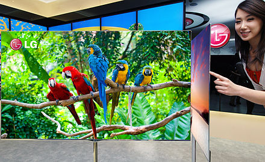
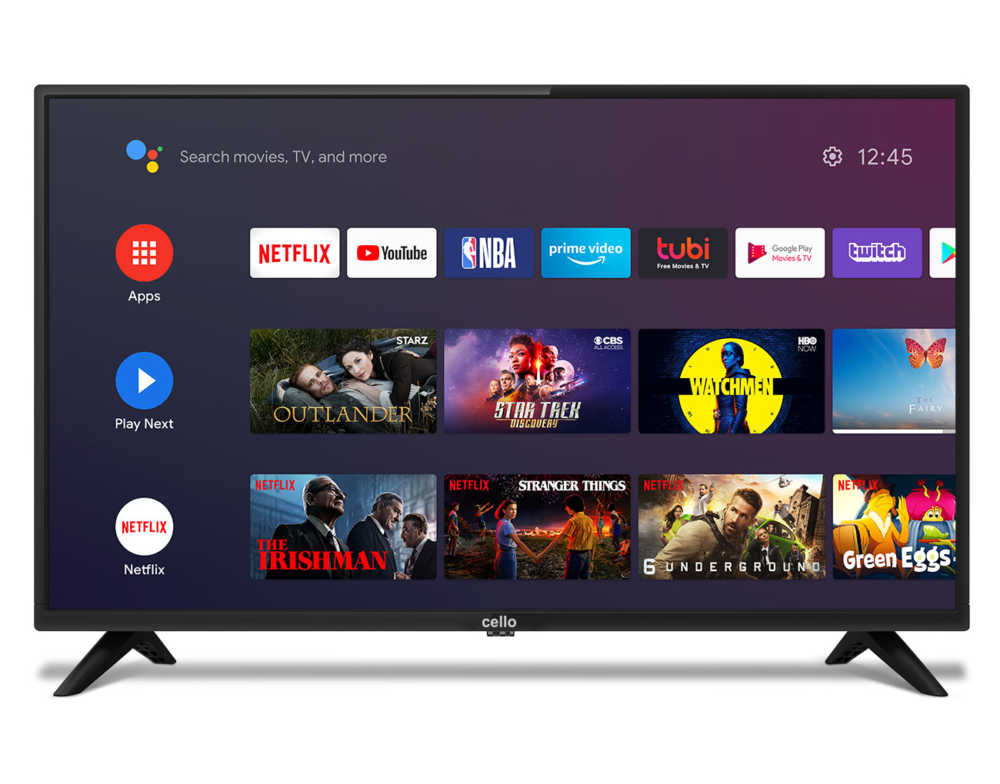
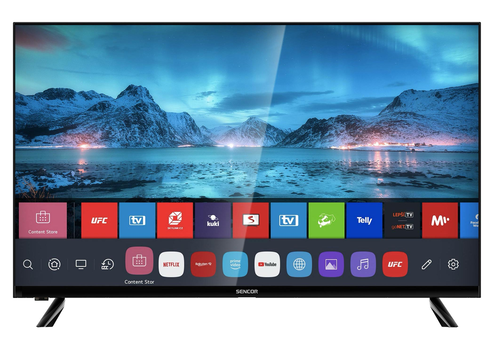
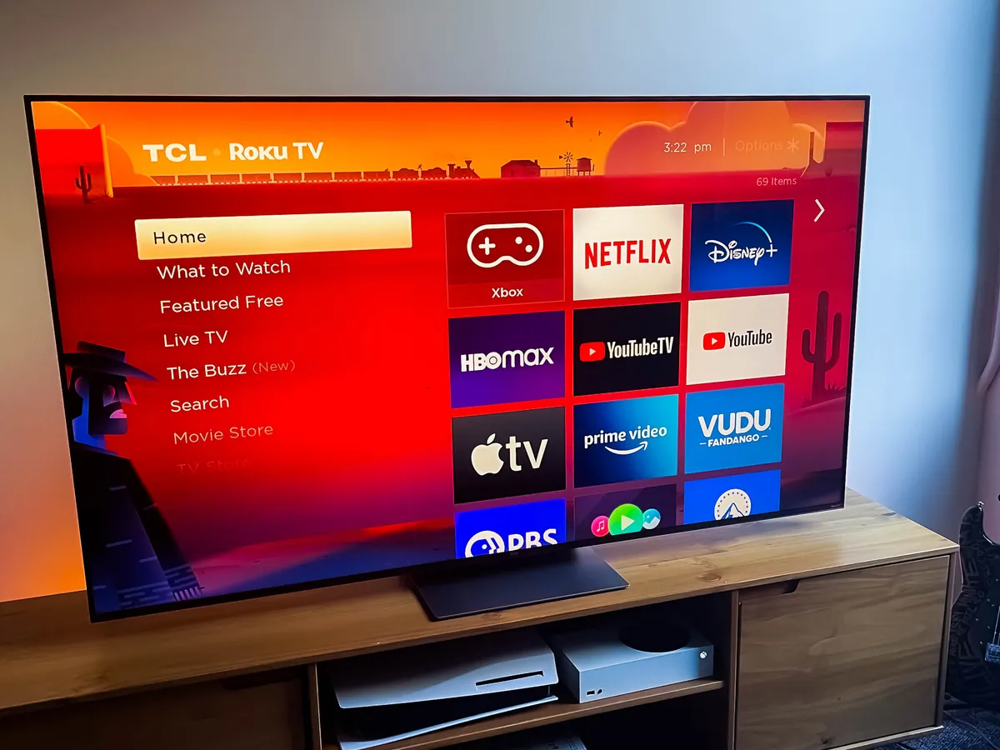

TV/Television
Television (TV) is a telecommunication medium for transmitting moving images and sound. The term can refer to a television set, or the medium of television transmission. Television is a mass medium for advertising, entertainment, news, and sports.
Television became available in crude experimental forms in the late 1920s, but only after several years of further development was the new technology marketed to consumers. After World War II, an improved form of black-and-white television broadcasting became popular in the United Kingdom and the United States, and television sets became commonplace in homes, businesses, and institutions. During the 1950s, television was the primary medium for influencing public opinion. In the mid-1960s, color broadcasting was introduced in the U.S. and most other developed countries.
The availability of various types of archival storage media such as Betamax and VHS tapes, LaserDiscs, high-capacity hard disk drives, CDs, DVDs, flash drives, high-definition HD DVDs and Blu-ray Discs, and cloud digital video recorders has enabled viewers to watch pre-recorded material—such as movies—at home on their own time schedule. For many reasons, especially the convenience of remote retrieval, the storage of television and video programming now also occurs on the cloud (such as the video-on-demand service by Netflix). At the end of the first decade of the 2000s, digital television transmissions greatly increased in popularity. Another development was the move from standard-definition television (SDTV) (576i, with 576 interlaced lines of resolution and 480i) to high-definition television (HDTV), which provides a resolution that is substantially higher. HDTV may be transmitted in different formats: 1080p, 1080i and 720p. Since 2010, with the invention of smart television, Internet television has increased the availability of television programs and movies via the Internet through streaming video services such as Netflix, Amazon Prime Video, iPlayer and Hulu.
In 2013, 79% of the world's households owned a television set. The replacement of earlier cathode-ray tube (CRT) screen displays with compact, energy-efficient, flat-panel alternative technologies such as LCDs (both fluorescent-backlit and LED), OLED displays, and plasma displays was a hardware revolution that began with computer monitors in the late 1990s. Most television sets sold in the 2000s were flat-panel, mainly LEDs. Major manufacturers announced the discontinuation of CRT, Digital Light Processing (DLP), plasma, and even fluorescent-backlit LCDs by the mid-2010s. In the near future, LEDs are expected to be gradually replaced by OLEDs. Also, major manufacturers have announced that they will increasingly produce smart TVs in the mid-2010s. Smart TVs with integrated Internet and Web 2.0 functions became the dominant form of television by the late 2010s.
Television signals were initially distributed only as terrestrial television using high-powered radio-frequency television transmitters to broadcast the signal to individual television receivers. Alternatively television signals are distributed by coaxial cable or optical fiber, satellite systems and, since the 2000s via the Internet. Until the early 2000s, these were transmitted as analog signals, but a transition to digital television was expected to be completed worldwide by the late 2010s. A standard television set consists of multiple internal electronic circuits, including a tuner for receiving and decoding broadcast signals. A visual display device that lacks a tuner is correctly called a video monitor rather than a television.
Etymology
The word television comes from Ancient Greek τῆλε (tele) 'far', and Latin visio 'sight'. The first documented usage of the term dates back to 1900, when the Russian scientist Constantin Perskyi used it in a paper that he presented in French at the first International Congress of Electricity, which ran from 18 to 25 August 1900 during the International World Fair in Paris.
The anglicised version of the term is first attested in 1907, when it was still "...a theoretical system to transmit moving images over telegraph or telephone wires".It was "...formed in English or borrowed from French télévision." In the 19th century and early 20th century, other "...proposals for the name of a then-hypothetical technology for sending pictures over distance were telephote (1880) and televista (1904)."
The abbreviation TV is from 1948. The use of the term to mean "a television set" dates from 1941. The use of the term to mean "television as a medium" dates from 1927. The term telly is more common in the UK. The slang term "the tube" or the "boob tube" derives from the bulky cathode-ray tube used on most TVs until the advent of flat-screen TVs. Another slang term for the TV is "idiot box".
Display technologies
Disk
The earliest systems employed a spinning disk to create and reproduce images. These usually had a low resolution and screen size and never became popular with the public.
CRT
The cathode-ray tube (CRT) is a vacuum tube containing one or more electron guns (a source of electrons or electron emitter) and a fluorescent screen used to view images. It has a means to accelerate and deflect the electron beam(s) onto the screen to create the images. The images may represent electrical waveforms (oscilloscope), pictures (television, computer monitor), radar targets or others. The CRT uses an evacuated glass envelope which is large, deep (i.e. long from front screen face to rear end), fairly heavy, and relatively fragile. As a matter of safety, the face is typically made of thick lead glass so as to be highly shatter-resistant and to block most X-ray emissions, particularly if the CRT is used in a consumer product. In television sets and computer monitors, the entire front area of the tube is scanned repetitively and systematically in a fixed pattern called a raster. An image is produced by controlling the intensity of each of the three electron beams, one for each additive primary color (red, green, and blue) with a video signal as a reference. In all modern CRT monitors and televisions, the beams are bent by magnetic deflection, a varying magnetic field generated by coils and driven by electronic circuits around the neck of the tube, although electrostatic deflection is commonly used in oscilloscopes, a type of diagnostic instrument.
 CRTDLP
Digital Light Processing (DLP) is a type of video projector technology that uses a digital micromirror device. Some DLPs have a TV tuner, which makes them a type of TV display. It was originally developed in 1987 by Dr. Larry Hornbeck of Texas Instruments. While the DLP imaging device was invented by Texas Instruments, the first DLP based projector was introduced by Digital Projection Ltd in 1997. Digital Projection and Texas Instruments were both awarded Emmy Awards in 1998 for invention of the DLP projector technology. DLP is used in a variety of display applications from traditional static displays to interactive displays and also non-traditional embedded applications including medical, security, and industrial uses. DLP technology is used in DLP front projectors (standalone projection units for classrooms and business primarily), but also in private homes; in these cases, the image is projected onto a projection screen. DLP is also used in DLP rear projection television sets and digital signs. It is also used in about 85% of digital cinema projection.
 DLPOLED
An OLED (organic light-emitting diode) is a light-emitting diode (LED) in which the emissive electroluminescent layer is a film of organic compound which emits light in response to an electric current. This layer of organic semiconductor is situated between two electrodes. Generally, at least one of these electrodes is transparent. OLEDs are used to create digital displays in devices such as television screens. It is also used for computer monitors, portable systems such as mobile phones, handheld game consoles and PDAs. There are two main groups of OLED: those based on small molecules and those employing polymers. Adding mobile ions to an OLED creates a light-emitting electrochemical cell or LEC, which has a slightly different mode of operation. OLED displays can use either passive-matrix (PMOLED) or active-matrix (AMOLED) addressing schemes. Active-matrix OLEDs require a thin-film transistor backplane to switch each individual pixel on or off, but allow for higher resolution and larger display sizes. An OLED display works without a backlight. Thus, it can display deep black levels and can be thinner and lighter than a liquid crystal display (LCD). In low ambient light conditions such as a dark room an OLED screen can achieve a higher contrast ratio than an LCD, whether the LCD uses cold cathode fluorescent lamps or LED backlight. OLEDs are expected to replace other forms of display in near future.
 OLEDSmart Tv
A smart TV, also known as a connected TV (CTV), is a traditional television set with integrated Internet and interactive Web 2.0 features, which allows users to stream music and videos, browse the internet, and view photos. Smart TVs are a technological convergence of computers, televisions, and digital media players. Besides the traditional functions of television sets provided through traditional broadcasting media, these devices can provide access to over-the-top media services such as streaming television and internet radio, along with home networking access.
Smart TV should not be confused with Internet TV, IPTV, or streaming television. Internet TV refers to receiving television content over the Internet instead of traditional systems such as terrestrial, cable, and satellite, regardless of how the Internet is delivered. IPTV is one of the Internet television technology standards for use by television broadcasters. Streaming television is a term used for programs created by many producers for showing on Internet TV.
In smart TVs, the operating system is preloaded into the television set's firmware, which provides access to apps and other digital content. In contrast, traditional televisions primarily act as displays and are limited to vendor-specific customization. The software applications can be preloaded into the device or updated or installed on demand via an application store or marketplace, in a similar manner to how applications are integrated into modern smartphones
The technology that enables smart TVs is also incorporated in external devices such as set-top boxes and some Blu-ray players, game consoles, digital media players, hotel television systems, smartphones, and other network-connected interactive devices that utilize television-type display outputs. These devices allow viewers to find and play videos, movies, TV shows, photos, and other content from the Web, cable or satellite TV channels, or a local storage device.
History
In the early 1980s, "intelligent" television receivers were introduced in Japan. The addition of an LSI chip with memory and a character generator to a television receiver enabled Japanese viewers to receive a mix of programming and information transmitted over spare lines of the broadcast television signal. A patent was filed in 1994 (and extended the following year) for an "intelligent" television system, linked with data processing systems, by means of a digital or analog network. Apart from being linked to data networks, one key point is its ability to automatically download necessary software routines, according to a user's demand, and process their needs.
However, descriptions of the elements of a smart television can be found in public discourse from the beginning of the 1980s, if not earlier, with the introduction of videotex services, particularly teletext information for reception by television sets, leading commentators to consider that televisions and accessories would evolve to encompass a range of related activities. In the words of one commentator: "In the long run, this machine is likely to develop into a multi-purpose receiver, for electronic mail, dealing with the bank, calculations, remote information - and 'Not the nine o'clock news' or 'Casablanca' on video."
The mass acceptance of digital television in the mid-late 2000s and early 2010s greatly improved Smart TVs. Major TV manufacturers have announced production of Smart TVs only for their middle-end to high-end TVs in 2015. Smart TVs became the dominant form of television during the late 2010s. At the beginning of 2016, Nielsen reported that 29 percent of those with incomes over $75,000 a year had a Smart TV.
A smart TV is a television set with integrated Internet and interactive Web 2.0 features, which allows users to stream music and videos, browse the internet, and view photos. Smart TVs are a technological convergence of computers, televisions, and digital media players. Besides the traditional functions of television sets provided through traditional broadcasting media, these devices can provide access to over-the-top media services such as streaming television and internet radio, along with home networking access.
Smart TVs are typically connected to the internet via Wi-Fi or Ethernet. Once connected, users can access a variety of apps and services, including:
- Streaming video services: Netflix, Hulu, Amazon Prime Video, Disney+, etc.
- Streaming music services: Spotify, Apple Music, Pandora, etc.
- Social media apps: Facebook, Twitter, YouTube, etc.
- Web browsers: Google Chrome, Firefox, Safari, etc.
- Games: Angry Birds, Candy Crush Saga, etc.
- Productivity apps: Microsoft Office, Google Docs, etc.
Smart TVs also offer a number of features that traditional televisions do not, such as:
- Voice search: Users can search for content by speaking into the TV remote control.
- Personalization: Users can create personalized profiles to recommend content based on their interests.
- Smart home integration: Smart TVs can be integrated with other smart home devices, such as thermostats, lights, and security systems.
Smart TVs have improved the way we watch television in a number of ways. They offer a wider variety of content, more personalized recommendations, and the ability to connect to our other smart devices. As a result, smart TVs have become an essential part of many homes.
Here are some of the specific things that have been improved with smart TVs:
- Content: Smart TVs offer a wider variety of content than traditional televisions. They can access streaming services like Netflix, Hulu, and Amazon Prime Video, which offer a huge library of movies, TV shows, and documentaries. They can also access on-demand content from cable and satellite providers.
- Personalization: Smart TVs can be personalized to each user's interests. They can recommend content based on what the user has watched in the past, and they can also track the user's viewing habits to make more accurate recommendations.
- Connectivity: Smart TVs can be connected to other smart devices in the home. This allows users to control their TVs with their voices, and it also allows them to share content between devices.
- Features: Smart TVs come with a variety of features that traditional televisions do not. These features include voice search, personalized recommendations, and smart home integration.
smart TVs have made a significant impact on the way we watch television. They offer a wider variety of content, more personalization, and the ability to connect to our other smart devices. As a result, smart TVs have become an essential part of many homes.
Software
TV software, refers to the applications and programs that are designed to run on televisions or TV-related devices. These software solutions enhance the functionality, entertainment options, and user experience of television sets, set-top boxes, smart TVs, streaming devices, and other TV-enabled devices.
List of smart TV platforms
The following list encompasses notable smart TV platforms and application software that are used as software framework and middleware platforms used by more than just one manufacturer.
TV software encompasses a wide range of applications and services that cater to various aspects of the television experience.
Here are some key areas where TV software plays a significant role:
- User Interface (UI): TV software includes the user interface that is displayed on the screen, allowing users to navigate and interact with the television's features and content. The UI design focuses on providing a visually appealing, intuitive, and user-friendly interface, enabling users to easily access channels, settings, apps, and other TV functionalities.
- Electronic Program Guide (EPG): An essential component of TV software is the electronic program guide. The EPG provides users with a detailed schedule of TV programs, allowing them to browse through channels, view program descriptions, and set reminders or recordings. EPGs may also include additional information such as program ratings, cast details, and episode summaries.
- Content Streaming and On-Demand Services: With the rise of streaming platforms, TV software has evolved to support a wide range of content streaming services. These software solutions enable users to access popular streaming platforms like Netflix, Hulu, Amazon Prime Video, and more, directly from their TV screens. They provide seamless integration, allowing users to browse and stream their favorite movies, TV shows, documentaries, and other digital content.
- Smart TV Functionality: TV software powers the smart features found in modern smart TVs. These features include internet connectivity, web browsing, social media integration, and access to various apps and online services. Smart TVs leverage TV software to provide users with a connected and interactive experience, transforming traditional televisions into versatile multimedia hubs.
- Multimedia Playback: TV software enables the playback of multimedia files, including videos, music, and photos. It supports various media formats and codecs, allowing users to enjoy their personal media collections or external storage devices directly on the TV screen. Media players integrated into TV software provide controls for playback, navigation, and customization options.
- Gaming and Interactive Applications: Many TV software solutions support gaming and interactive applications. These applications allow users to play video games, engage in interactive educational programs, access fitness or yoga routines, or even use TV screens as interactive digital whiteboards. They may support various input methods, such as game controllers, motion sensors, or even voice commands.
- System Updates and Maintenance: TV software includes mechanisms for system updates and maintenance to ensure optimal performance and security. These updates may introduce new features, improve existing functionalities, fix bugs, and address security vulnerabilities. Automatic updates or manual update options are often provided to keep the TV software up-to-date.
- Customization and Personalization: TV software provides customization options to cater to individual preferences. Users can personalize their TV experience by choosing themes, wallpapers, screen savers, or even arranging the layout of the user interface. Some TV software may also offer personalized recommendations based on viewing habits and preferences.
- Integration with Other Devices: TV software allows seamless integration with other devices and services within the connected home ecosystem. This includes integration with voice assistants like Amazon Alexa or Google Assistant, home automation systems, IoT devices, and multimedia servers. Such integrations enable users to control their TV and access content through voice commands or automation.
- Accessibility Features: TV software incorporates accessibility features to ensure inclusivity and accommodate users with different needs. These features may include closed captioning, audio descriptions, text-to-speech functionality, high contrast modes, and customizable subtitles. TV software strives to make television content accessible to a broader audience.
| Framework | Managed by | Used by | Comment |
|---|---|---|---|
| Android TV |
|
Gives access to Android apps through the Play Store. | |
| Boxee | Boxee, Inc | D-Link | Popular fork of the Kodi/XBMC media center software with custom graphical user interface and some proprietary application framework for apps.[3][4] |
| Fire TV | Amazon |
|
|
| Firefox OS for TV, My Home Screen | Mozilla | Panasonic | Panasonic's Smart TVs, including their new 4K TVs, continue to feature Mozilla's open source Firefox OS, despite Mozilla lowering its development priority on developing the operating system.[6] Panasonic is continuing to develop their fork, calling it My Home Screen while Mozilla has stated that they will continue to support and work with Panasonic[7][8] |
| Frog | Wyplay | SFR | Used by some IPTV operators, such as SFR in France on its set-top-box |
|
Google TV
(original, not to be confused with 2020-released interface gradually replacing Android TV) |
|
Android-based platform.[9] Its development stopped in 2013[10] and it is replaced by Chromecast and Android TV. | |
| Horizon TV | Liberty Global | A cross-platform platform based fork of the Kodi/XBMC media center software with proprietary middleware framework for video on demand and handling DRM for streaming cable television channels. | |
| httvLink | HTTV |
|
HbbTV-compliant |
| Inview | Inview Technology Ltd |
|
Connects an ordinary TV (or set-top box) to get IPTV.[11][12] |
| JRiver | JRiver | Runs on Windows, OSX, Linux, and Android. Features similar to Plex or Kodi. Closed source. | |
| Kodi Entertainment Center (formerly XBMC / Xbox Media Center) | XBMC Foundation | Kodi/XBMC is royalty-free and cross-platform. The core code is written in C++ and is open-source licensed under GNU GPL v2. It offers the possibility for easy rebranding by an original design manufacturer (ODM) or original equipment manufacturer (OEM), with customizing of interface look and feel using skins, and simple plug-ins from third-party developers, available via Python scripts for content extensions. Due to these reasons, many systems integrators have created modified versions of Kodi, along with a JeOS (just enough operating system) made for Kodi/XBMC that are mostly used as a software appliance suite in a variety of devices including smart TVs, set-top boxes, digital signage, hotel television systems, in-flight entertainment platforms, and network connected digital media players. | |
| MeeGo | Nokia, The Linux Foundation | Middleware for smart TV. Now split into Tizen, Mer, and Sailfish OS)[13] (Linux Foundation, Intel, AMD[14]), currently based on a derivative fork of Kodi/XBMC media center software[15][16][17][18] | |
| Mediaroom | Ericsson (formerly Microsoft) | Offered by 90 operators around the world | Middleware for pay-TV operators[19][20][21] |
| OpenTV | Nagravision |
|
Middleware for pay-TV operators |
| Vewd (formerly Opera TV) | Vewd |
|
|
| VIDAA | VIDAA International |
|
Smart TV operating system giving access to 250+ global & local content apps and millions of hours of content being watched every month |
| Oregan Media Browser 5 | Oregan Networks |
|
Middleware for pay-TV operators, deployed by large telecoms and cable operators such as BT and Telefónica on hybrid STBs |
| Plex | Plex, Inc | Closed source cross-platform media center with proprietary streaming functionality to numerous devices. Started out as a popular fork of the Kodi/XBMC media center software. | |
| PowerUp Suite | Zodiac Interactive |
|
Middleware, presentation engine, low level adaptation, back office mediation for Tier 1 through Tier 3 pay TV operators |
| Roku TV [22] | Roku |
|
|
| RDK (Reference Development Kit) | RDK Management, LLC |
|
|
| Smart TV Alliance | Smart TV Alliance |
|
A common SDK for TV app development and publishing for TV vendors. |
| ToFu Media Platform | Pivos |
|
Cross-platform fork of Kodi/XBMC media center licensed to third parties and other commercial partners as OEM. |
| Ubuntu TV | Canonical | Ubuntu operating system[24][25][26] based platform, with Unity Next user interface for TV. | |
| Virtuoso | RCA | RCA | A closed source operating system that supports only 2.4ghz Wifi, offers apps Netflix, Twitter, YouTube, Facebook, Pandora, Accuweather and Mirracast screen share. |
| Yahoo! Smart TV (formerly Yahoo! Connected TV) | Yahoo! |
|
|
| Shijiu TV | Shijiu, Inc |
|
Middleware for internet TV. A cross-platform high-performance OpenGL based HTML5 engine licensed to third parties and other commercial partners as OEM. Also known as 'QCast'. |
Smart TV platforms utilized by Companies
| Company | Platform | Devices |
|---|---|---|
| Amazon | Fire TV | For Fire TV devices, including Fire TV Stick. |
| Apple | tvOS | For Apple TV devices. iOS-based, with an app store. For Apple TV generation 4 and later. |
| Apple TV Software | For Apple TV devices, generations 1 to 3. iOS-based. Initially based on Mac OS X Tiger and Front Row. | |
| Chromecast | For Chromecast HDMI dongles. | |
| Haier | Roku TV | For TV sets. |
| Hisense | Android TV | For TV sets. |
| Roku TV | For TV sets. | |
| VIDAA / VIDAA U | For TV sets. | |
| Hitachi | Roku TV | |
| Huawei/Honor | HarmonyOS | For TV sets. |
| Insignia | Roku TV | For TV sets. |
| LG | webOS Smart TV | Current solution for TV sets. Used on Smart TVs released after 2014.[27] |
| NetCast | Former solution for TV sets. Used on Smart TVs released before 2014.[28][29][30][31][32] | |
| Microsoft | Xbox One | For Xbox One game console. More Smart TV features and TV apps expected with the Windows 10 update, that include the Windows Universal App Store. |
| Xbox 360 | For Xbox 360 game console, with smart TV features. | |
| Netgear | NeoTV | For NeoTV streaming players. |
| Nvidia | Android TV | For Nvidia Shield TVs. |
| Panasonic | Viera Cast and Viera Connect | For TV sets. The newer TV models now use the Firefox OS TV platform (no longer vendor specific). |
| My Home Screen | For TV sets. | |
| Android TV | For TV sets. Since 2020. | |
| Philips | Android TV | For TV sets. |
| Net TV | Former solution for TV sets. The newer TV models use the Android TV platform | |
| Roku | Roku TV | For Roku TV sets. Also for Roku TV Streaming Sticks and Players |
| Samsung | Tizen OS for TV | For newer TV sets. |
| Samsung Smart TV (Orsay OS[33]) | Former solution for TV sets and connected Blu-ray players. Now replaced by Tizen OS.[34] | |
| Sharp | Android TV | For TV sets. |
| AQUOS NET+ | Former solution for TV sets. | |
| Roku TV | For TV sets. | |
| SmartCentral | Former solution for TV sets. | |
| Sony | Android TV | For TV sets. |
| PlayStation TV with Sony Entertainment Network | For PlayStation game console.[35][36] | |
| Sony Internet TV (Sony Apps) | Former solution for TV sets. The newer TV models use the Android TV platform (no longer vendor specific). | |
| TCL | Android TV | For TV sets. The newer TV models use the Roku TV platform |
| Roku TV | For TV sets. | |
| Smart TV 2 | Former solution for TV sets. | |
| TiVo | TiVo | For TiVo DVR box. |
| Toshiba | Android TV | For TV sets. |
| Toshiba Places | Former solution for TV sets. | |
| VIDAA | For TV sets[37] | |
| Sling Media | Slingbox | For Slingbox set-top-boxes. |
| Skyworth | Android TV | For TV sets. |
| Vizio | SmartCast | For TV sets. |
| Western Digital | WD TV | For WD TV boxes. |
| Westinghouse | Android TV | For TV sets. |
| Fire TV | For TV sets. | |
| Roku TV | For TV sets. | |
| Samba TV | Former solution for TV sets. | |
| Xiaomi | PatchWall based on Android | For TV sets in mainland China, India, Indonesia |
| Android TV | For TV sets in global markets (models: 5ASP/5ARU/6ARG), Mi Box line of set top boxes and Xiaomi TV Stick line of streaming dongles. |